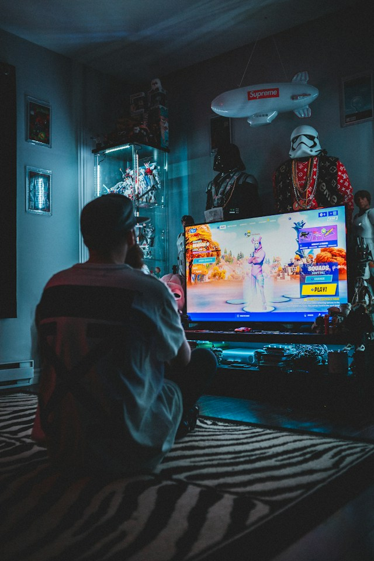

Mina tre intressen är fotboll, Fortnite och att läsa böcker.
Jag tycker om dessa saker eftersom de ger mig glädje, underhållning och möjlighet att koppla av.
Alla tre är olika, men de betyder mycket för mig på olika sätt.
Fotboll är en av världens mest populära sporter och spelas av miljontals människor.
Sporten handlar om att samarbeta som ett lag, göra mål och försöka vinna matcher.
Fotboll är mer än bara en sport eftersom den skapar gemenskap, glädje och vänskap.
För många är fotbollen en stor del av livet och något som ger motivation och hjälper en att glömma vardagens problem.

Fortnite är ett populärt datorspel där spelare tävlar mot varandra för att försöka bli den sista överlevande.
Spelet är känt för sina färgglada miljöer, byggfunktioner och olika spellägen. Man kan spela själv eller tillsammans med sina vänner.
Fortnite handlar inte bara om att vinna, utan också om samarbete, strategi och att ha roligt.
Jag gillar att läsa böcker eftersom det är ett bra sätt att koppla av och försvinna in i en annan värld.
Jag tycker om att följa olika berättelser och lära mig nya saker. Det är också ett roligt sätt att utveckla sin fantasi och sitt ordförråd.